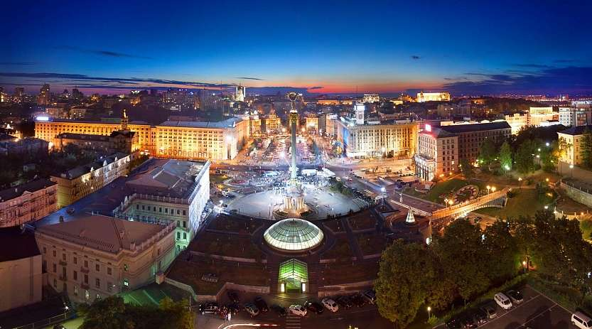
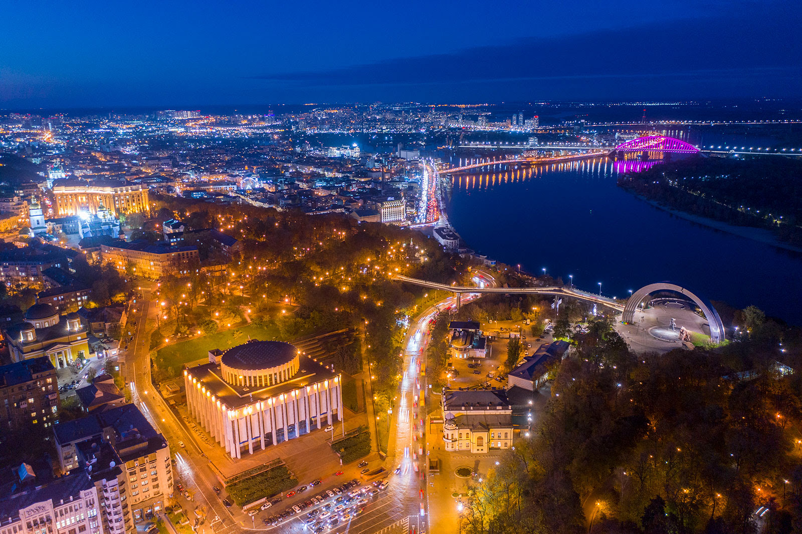
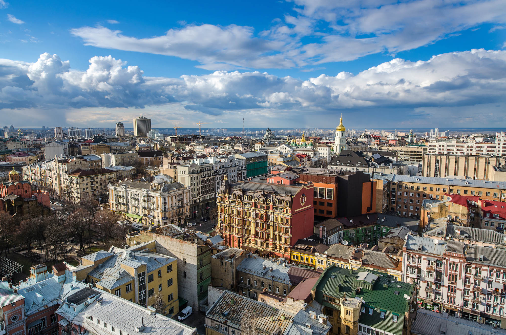

Ки́їв — столиця та найбільше місто України, одне з найбільших і найстаріших міст Європи. Розташований у середній течії Дніпра, у північній Наддніпрянщині. Політичний, соціально-економічний, транспортний, освітньо-науковий, історичний, культурний та духовний центр України. У системі адміністративно-територіального устрою України Київ має спеціальний статус, визначений Конституцією, і не входить до складу жодної області, хоча і є адміністративним центром Київської області. Місце розташування центральних органів влади України, іноземних місій, штаб-квартир більшості підприємств і громадських об'єднань, що працюють в Україні.

За «Повістю временних літ», Київ заснував полянський князь Кий зі своїми братами Щеком і Хоривом та сестрою Либіддю. Згідно з археологічними даними та писемними джерелами, початок безперервного розвитку Києва датується 2-ю половиною V ст. — 1-ю половиною VI ст.; осередком розширення Києва була гора Замкова. Був столицею полян, Русі, Київського князівства, Великого князівства Руського, Української Народної Республіки, Української Держави та Української Радянської Соціалістичної Республіки. Також був адміністративним центром однойменного литовсько-польського воєводства, козацького полку, російської губернії, радянської округи, німецької генеральної округи та радянської області.
Один із найстаріших історичних центрів Східної Європи та християнства — Софійський собор та Києво-Печерська лавра внесені до списку Світової спадщини ЮНЕСКО.
Географія
Місто розташоване на півночі України, на межі Полісся і лісостепу по обидва береги Дніпра в його середній течії. Площа міста 836 км². Довжина вздовж берега — понад 20 км.
Київ здавна розташовувався на перетині важливих шляхів. Ще за Київської Русі таким шляхом був легендарний «Шлях із варягів у греки». Нині місто перетинають міжнародні автомобільні та залізничні шляхи. Рельєф Києва сформувався на межі Придніпровської височини, а також Поліської та Придніпровської низовин. Більша частина міста лежить на високому (до 196 м над рівнем моря) правому березі Дніпра — Київському плато, порізаному густою сіткою ярів на окремі височини: Печерські пагорби, гори Щекавицю, Хоревицю, Батиєву та інші. Менша частина лежить на низинному лівому березі Дніпра. Житлові квартали міста оточує суцільне кільце лісових масивів.

Гідрографія
-
Основною рисою Києва є наявність великої гідрографічної «осі» — річки Дніпро, яка поділяє територію міста на дві частини — правобережну і лівобережну. Дніпро — найбільша в Києві, третя за довжиною і площею басейну річка Європи після Волги та Дунаю. Після будівництва каскаду дніпровських водосховищ гідрологічний режим Дніпра (зокрема і в межах Києва) змінився. Так, підпір Канівського водосховища сягає течії Дніпра в районі моста Метро на території Києва. Поблизу Києва (на північ) розташовано Київське водосховище на Дніпрі.
-
Територія Києва також дренується численними постійними та тимчасовими водотоками, які утворюють гідрографічну мережу з близько 70 малих річок, що зрештою впадають у Дніпро. Структура гідрографічної мережі малих річок Києва визначається басейновими угрупованнями водних об'єктів.
-
Гідрографія правого берега: центральна частина — басейн річки Либідь з її притоками, а також басейн річки Почайна (див. Опечень) з головними притоками Глибочиця та Сирець; північна та західна частини міста розташовані в басейні річки Ірпінь, а точніше її приток — річок Нивка та Горенка; південна частина міста — у басейні річки Віта.
-
Гідрографія лівого берега: басейн річки Дарниця з її притоками.
На малих річках споруджено понад 100 ставків. Є понад три десятки природних озер, серед яких можна назвати Тельбін, Райдужне, Синє, Вербне, Йорданське, Зелене озеро.
Екологія
Ліси, парки та сади становлять більш ніж половину площі Києва з майже 80 000 гектарів. На одного киянина (станом на 2004 рік) припадало 22,1 м² зелених насаджень (за міжнародними нормами, цей показник має бути не меншим за 20 м²).
Питаннями екології Києва опікується Державне Управління охорони навколишнього природного середовища у м. Києві, яке з 2006 року очолює Прогнімак Олександр Володимирович.
У лісопарках міста гніздиться чимало видів диких птахів, зокрема хижаків та таких, що гніздяться в дуплах, мешкають різновиди кажанів. Більшість цих видів занесено до Червоної книги України. Наприклад, урочище «Лиса гора» — фактично острів посеред міської забудови Києва. Тут протягом багатьох років розташовувався військовий об'єкт, завдяки чому (за даними співробітників Інституту зоології) до останнього часу збереглися види, занесені до Червоної книги — аполлон, махаон, Синявець Мелеагр, жук-олень, бджола-тесляр, мала вечірниця. У межах міста трапляються поселення бобрів.
Важливу роль у збереженні біорізноманіття міста відіграє Дніпро з його затоками, притоками, островами. Тут гніздяться десятки видів птахів. У період весняної міграції навпроти житлового масиву Оболонь 1994 року спостерігали скупчення гоголів до декількох сотень особин. На Бортницькій зрошувальній системі кілька років тому[коли?] зимувало до двох десятків орланів-білохвостів (в Україні їх зимує близько 300 особин).
Кілька сотень найстаріших та видатних дерев Києва є ботанічними пам'ятками природи.
Клімат
Клімат помірно континентальний, із м'якою зимою і теплим літом. Середньомісячні температури січня −3,5 °C, липня +20,5 °C. Абсолютний мінімум — −32,2 °C (7, 9 лютого 1929 року), абсолютний максимум — +39,9 °C (серпень 1898 року) (за іншими даними: +39,4 °C, 30 липня 1936 року). Середньорічна кількість опадів — 649 мм, максимум опадів припадає на липень (88 мм), мінімум — на жовтень (35 мм). Взимку в Києві утворюється сніговий покрив, середня висота покриву в лютому 20 см, максимальна — 440 см.
Середньорічна загальна хмарність — 6,4 бала, максимум припадає на грудень (8,2), мінімум — на серпень (4,8). Середня вологість повітря — від 64 % (травень) до 85 % (листопад).
Історія
За легендою «Повісті временних літ», Київ заснував легендарний полянський князь Кий разом із братами Щеком і Хоривом і сестрою Либіддю. Літопис не має дати заснування міста. Археологічні та писемні джерела свідчать, що Київ розвинувся на основі язичницького поселення кінця V — початку VI століття. Згідно енциклопедії Британіка, місто було засноване у VI або VII століттях. Його центром була Старокиївська гора на правому березі Дніпра. У VI—VII століттях були заселені сусідні з нею підвищення. Розташовування Києва на Дніпровському шляху, у зоні етнічного порубіжжя, на межі лісу і лісостепу, сприяли висуненню міста на роль політичного центру Середнього Подніпров'я.
На межі VIII—IX століть Київ став головним містом Руської землі — міжплемінного об'єднання південних східнослов'янських племен, а з 882 року, після завоювання його варягами, — «матір'ю міст руських» — столицею Руської держави. Тоді ж сформувався середньовічний поділ міста на князівський Дитинець на Старокиївській горі та торговельно-ремісничий Посад на Подолі. В першому мешкала знать і духовенство, а в другому — простолюд. Місто було одним із центрів міжнародної торгівлі з Візантією, Скандинавією, Західною Європою, мусульманським світом. З першої половині X століття на Подолі діяла перша християнська церква.
За правління великого князя Володимира (980—1015) територія київського Дитинця була розширена і укріплена та сягнула 10 га. В історіографії її називають «городом Володимира». Дитинець оточував вал із трьома воротами, парадними з яких були Софійські. Після хрещення Русі в 988 році Київ став центром митрополії Константинопольського патріархату. Головним міським храмом була Десятинна церква, зведена неподалік княжого палацу і ринку «Бабин торжок». Син Володимира, Ярослав (1019—1054), ще більше розширив Дитинець, збудувавши і оточивши оборонними валами з ровами так званий город Ярослава[3]. Він звів нові фортечні укріплення, довжиною понад 3,5 км, які оточували площу 72 га. Київ було перетворено на найбільшу фортецю Русі. Новою головною брамою стали Золоті ворота, а головним храмом — Софійський собор, кафедра київських митрополитів. Ярославові нащадки Ізяслав (1054—1068, 1069—1073) і Святополк (1093—1113) збудували нове укріплення — так званий город Святополка. Його центром став Києво-Михайлівський Золотоверхий собор, що дав назву однойменному монастирю. Таким чином, тодішній Київ мав три фортифікаційні укріплення (городи) площею 80 га.
Найбільшим районом Києва був придніпровський Поділ. У XII—XIII століттях він займав площу близько 200 га, що була оточена оборонним валом. У центрі Подолу розміщувався головний міський ринок — «Торговище», довкола якого стояли церква Пирогоща, Борисоглібська й Михайлівська церкви. На захід від міста пролягав Копирів кінець, де за князювання Святослава Ярославича (1073—1076) заклали монастир святого Симеона. За містом розташовувалися монастирі — Кирилівський, Кловський, Печерський (з 1598 — Києво-Печерська лавра) та Видубицький Свято-Михайлівський. Довкола міста тягнулися приміські села Предславине і Берестове, князівські й боярські двори, урочища Дорогожичі та Угорське.
На середину XII століття в Києві проживало близько 50 тисяч мешканців, діяло близько 400 церков, 8 базарів. Площа міста становила до 400 га.
У 1169 році Києвом заволодів владимиро-суздальський князь Андрій «Боголюбський». У 1240 році місто захопили монгольські завойовники на чолі з онуком Чингісхана — ханом Батиєм, розвиток міста був перерваний.
Незважаючи на спустошення та руйнування під час монгольської навали 1240 року, Київ продовжував грати помітну роль у політичному житті Східної Європи. Хоча чисельність його мешканців різко зменшилася, проте всі його головні історичні райони (Верхнє місто, Поділ, Замкова гора, Печерськ, Берестове, Клов, Видубичі тощо) були заселені. Головне ядро міста (Гора та Поділ) знаходилося в традиційних межах: Золоті та Лядські ворота на Горі та річка Почайна на Подолі. У 2-й половині XIV століття Замкова Гора перетворилася на Дитинець міста.
У 1321 році, після поразки у битві на річці Ірпінь Великому князю Литовському Гедиміну, князь Станіслав утік до Рязані, а його місце посів Міндовг Гольшанський — перший київський князь із роду Гольшанських.
Близько 1362 року Київ входить до складу Великого князівства Литовського. Його князем став Володимир Ольгердович. Входження відбувалося мирним шляхом, за договорами, які лишали все «по старовині». Володимир провадив незалежну політику, карбував власну монету, що, однак, призвело до його заміни в 1394 році на князя Скиргайла Ольгердовича, а після смерті останнього — до встановлення намісництва. Наприкінці XIV — на початку XV століть Київ являє собою політичний центр, де ведуть переговори великі князі литовські, Вітовт, король польський і верховний князь литововський Владислав II Ягайло, великий князь московський Василій Дмитрович, митрополити Кипріян, Фотій, Григорій (Цамблак), хан Тохтамиш. Місто стало головною базою армії Вітовта.
З кінця XIV сттоліття у списках паризької Сорбонни та інших університетів з'являються імена студентів з Києва, під 1436 роком зазначений перший доктор «рутенської нації з Києва» — Іван Тинкевич.
У 1440 році відновлено Київське князівство на чолі з князем Олельком Володимировичем. У 1455—1470 роках у Києві князював Семен Олелькович. Обидва князі користувалися авторитетом, мали династичні зв'язки з великими московськими та тверськими князями, молдовським господарем Стефаном III Великим. Час їхнього правління став для Києва періодом розвитку (базувався на традиціях матеріальної та духовної культури давньоруської доби): було здійснено ремонт Успенського собору та інших церков, створено кам'яні барельєфи із зображенням Оранти, а також нові редакції Патерика Києво-Печерського та інших писемних творів. Київ продовжував бути важливим центром внутрішньої та міжнародної торгівлі, мав право складу. Через місто транзитом ішло багато товарів зі Сходу, Європи, Московії тощо.
Київ був потенційним центром об'єднання руських земель, що перебували в складі Великого князівства Литовського, тому після смерті київського князя Семена Олельковича литовська влада перетворила князівство на воєводство. 1497 року великий князь литовський і руський Олександр Ягеллончик надав Києву Магдебурзьке право. Наприкінці XV століття в місті існував замок, резиденція київських воєвод, та ратуша, місце засідань київського магістрату. 1569 року, на прохання київської шляхти та за рішенням Люблінської унії між Великим князівством Литовським і Королівством Польським, що утворювала федеративну державу Річ Посполиту, Київ разом із воєводством перейшов до складу Польської корони.
Ранній новий час
Кінець XV століття став початком занепаду Києва, що зумовлювалося загальною кризою Великого князівства Литовського — його нездатністю організувати захист підвладних йому земель від нападів кримських татар, найбільший з яких здійснено 1482 року. Після Люблінської унії, незважаючи на тиск з боку польських феодалів і Католицької Церкви, у цей час відбувалося економічне піднесення міста. З 1625 року Київ був центром козацького Київського полку, який 1649 року в результаті Хмельниччини увійшов до складу держави Війська Запорозького. Попри малі розміри Києва, він був найбільшим православним центром Речі Посполитої та козацької держави. У місті розташовувалися резиденція православних київських митрополитів та православний Київський колегіум, який в 1659 році отримав статус академії.
Наступний період історії Києва розпочався окупацією його московськими військами після Переяславського союзу 1654 році, укладеного між Військом Запорозьким і Московією. Київ був потрібен московському урядові як «опорний пункт колонізаторської політики на півдні». Київ став резиденцією московських воєвод. У 1667 році внаслідок підписання Андрусівського миру, який розділив козацьку державу між Річчю Посполитою і Московським царством, місто увійшло до складу останнього. Формально Київ залишався під владою Війська Запорозького, але фактично містом керувала московська адміністрація. За «вічним миром» 1686 року Київ остаточно відійшов до Московської держави.
Розірвання зв'язків із західними областями України призвело у XVIII ст. до застою в економіці й торгівлі. Від 1782 року Київ став головним містом намісництва, територія якого охоплювала значну частину Гетьманщини. Після 2-го поділу Польщі (1793) і приєднання до Московії західноукраїнських воєводств, 1797 року була утворена Київська губернія. Із Дубна до Києва був переведений щорічний (у січні) Контрактовий ярмарок. Ці події поновили зв'язки Києва із західними областями й сприяли притоку поляків, головно шляхти, що посіла значне місце в житті Києва до польського повстання 1830—1831 років. У цей час московським урядом вживалися заходи для перетворення Києва, шляхом русифікації й витіснення із нього польського та єврейського населення, «на чисто російське місто».
Через прикордонний характер Києва в ньому постійно перебувала московська залога. На початку XVIII століття завершено будівництво Печерської фортеці. Київ втратив статус центру Київського полку у зв'язку з перенесенням полкової канцелярії до Козельця. У 1708 році місто стало адміністративним центром Київської губернії Російської імперії. З осені 1770 до літа 1771 року Київ страждав від епідемії чуми. Загинуло 2819 людей, переважно на Подолі. Після скасування автономії Війська Запорозького в 1782 Київ остаточно перейшов під владу росіян. Пам'ятками козацької доби в місті лишилися лише мазепинські церкви.
Новий час
За часів правління Російської імперії в XVIII — початку XX століття Київ був великим провінційним містом, п'ятим за величиною серед імперських міст після Санкт-Петербургу, Москви, Варшави й Одеси.
У 20-х роках XIX ст. у Києві налічувалося близько 40 000 населення, з яких 18 000 було військових.
Після повстання декабристів, 1827 року у Києві засновується генерал-губернаторство, що об'єднувало Київську, Подільську й Волинську губернії, задачею котрого було проведення русифікаторської політики царизму й боротьба проти революційного руху.
1840 року скасовано дію Литовського статуту.
Культурне, освітнє життя українців міста ускладнилося після Валуєвського циркуляра 1863 року, Емського указу 1876-го.
На відміну від попередніх століть кияни вперше дістали можливість розвивати своє місто в мирних умовах. Російська місцева влада приділяла увагу не лише розбудові історичного Подолу й Старокиївської гори, а й розвитку інфраструктури околиць — Бесарабки, Хрещатика, Печерська тощо. Головною вулицею міста була Володимирська, а центром ділового життя — контрактові ярмарки на Контрактовій площі.
У ХІХ столітті в Києві з'являються перший університет й оперний театр, проведено телефон і телеграф, розпочато рух Київського трамвая. Попри ліберальну соціально-економічну політику, імперський уряд проводив жорстку русифікацію місцевого польського, українського і єврейського населення.

